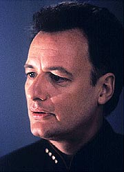
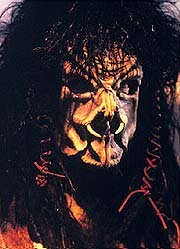
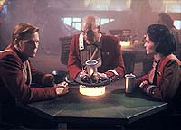
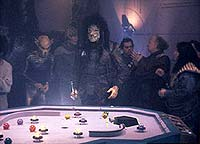
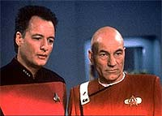

|
MANCHETE
DO EPISDIO
Q
acompanha Picard em uma jornada
que fala muito sobre cada um de ns
Episdio
anterior | Prximo
episdio
Sinopse:
Data Estelar:
desconhecida.
Gravemente ferido em um ataque Lenariano, Picard vai parar no que
parece ser um limbo claro e vazio, enquanto Beverly luta para salvar
sua vida. L, ele encontra Q, que informa o capito de que ele est
morto e de que essa a vida aps a morte --e que Q Deus.
Picard se recusa a acreditar que ele est morto, ou que Q possa ser
alguma forma de ser supremo. Mas Q est determinado a provar o
contrrio. Ele mostra a Picard o que o matou: seu corao
artificial, que falhou. O capito imediatamente sente um
arrependimento por seu passado impetuoso, em que entrou numa briga e
perdeu seu corao natural. Ele admite que, dada a oportunidade de
viver tudo de novo, ele faria as coisas de modo diferente.
 Q aproveita a deixa
para dar uma nova chance a Picard. O capito subitamente volta a
ser um jovem alferes em 2327 e Q d a ele a oportunidade de reviver
seu passado e evitar a briga que fez com que ele perdesse seu corao.
Se ele for bem-sucedido, ele voltar ao presente com seu corao
real intacto, e a histria da galxia permanecer a mesma. Se no,
ele morrer naquele presente e passar a eternidade com Q.
Inicialmente, Picard foi esfaqueado quando ele alterou uma mesa de
jogo para ajudar seu amigo da Frota Estelar Corey a se vingar de um
Nausicaan que trapaceou no mesmo jogo um dia antes. Como ele quer
evitar esse conflito, Picard tenta convencer Corey a no enfrentar
o Nausicaan. Corey joga do mesmo jeito, o Nausicaan trapaceia e
vence, e Corey naturalmente pede a Picard que o ajude a se vingar.
Mas Picard se recusa, apoiado por outra amiga chamada Marta,
provocando revolta em Corey.
Picard tambm muda seu comportamento com relao a Marta. Antes s
amigos, agora ele passa a noite com ela. Mas, pela manh, ela teme
que tenham arruinado sua amizade. Quando Picard, Marta e Corey se
encontram naquela noite, a tenso entre os trs est no mximo.
Ento as coisas pioram, quando trs Nausicaans aparecem e provocam
o grupo, na esperana de iniciar uma briga. Picard v os
Nausicaans se preparando para sacar suas armas e rapidamente derruba
Corey no cho para evitar que a briga ocorra. Mas, como Corey e
Marta no entendem as aes de Picard, eles vem a ao como
traio e se afastam desgostosos, dizendo a Jean-Luc que eles no
so mais amigos. Q parabeniza Picard por ter mudado seu destino, e
o capito devolvido ao presente. Entretanto, ele retorna
Enterprise como um tenente jnior.
 Segundo
Q, tudo continua como deveria ser --as mudanas no presente de
Picard refletem as mudanas que ele fez na juventude. Mas Picard
incapaz de trabalhar como um oficial de astrofsica de baixa
patente. Desorientado pela falta de respeito que ele precisa
enfrentar nas mos de seus ex-subordinados, ele fala com Troi e
Riker sobre suas chances de avano, e fica chocado ao ouvir que,
embora ele seja um oficial bom e confivel, ele no se destaca.
Desesperado, Picard chama Q e implora para que possa restaurar tudo
ao que era antes e morrrer, em vez de viver como um homem sem importncia.
Q concorda e permite que a briga de 2327 ocorra. Entretanto, no
momento em que Picard esfaqueado no corao, ele acorda na
enfermaria, cercado por Beverly, Worf e Riker. Apesar do trauma,
Picard sente gratido por Q, que deu a ele uma chance de entender
por que ele a pessoa que hoje.
Comentrios:
"Tapestry"
no s um roteiro extremamente inspirado; uma lio de
vida. Diferentemente de muitos episdios de Jornada, ele no
meramente alimento para uma discusso filosfica. Mais que
isso, ele transmite uma mensagem que aplicvel a todos ns,
independentemente do que fazemos ou em qual sculo estamos. Picard
pode estar no sculo 24, mas to humano quanto qualquer um na
audincia, e sofre as mesmas angstias que qualquer um.
 Se arrepender de
coisas que se fez no passado algo que todos os humanos
compartilham. "Tapestry" nos ensina, de forma muito
mais contundente e inteligente do que o faz o filme "Jornada
nas Estrelas V: A ltima Fronteira" (que chega a tocar no
tema, mas tropea no enredo perdido demais para se concentrar no
que realmente importa), que nossos erros do passado constroem nossos
acertos do futuro.
Picard se esqueceu de que a pessoa consciente e responsvel que ele
no presente s veio a existir porque ele foi audaz e
inconsequente no passado --foram os erros que o ensinaram a ser
audacioso, mas cuidadoso. Quando ele tenta converter seu passado em
sua concepo de ideal do presente, se v em uma vida
absolutamente medocre, no passando de um tenente jnior
especializado em astrofsica. Como ele mesmo coloca, ao puxar um
fio solto de sua vida, toda a tapearia se desmanchou diante de
seus olhos.
uma mensagem e tanto, e uma que no agride o telespectador com o
tpico moralismo trekker que costuma incomodar de vez em quando. O
trabalho contundente, mas no bvio. Ningum realmente espera
o que est por vir --todos so enganados, junto com Picard,
acreditando que o melhor seria realmente evitar o esfaqueamento que
levaria o ento alferes a usar um corao artificial. A concluso
da mudana naquele evento , por consequncia, to arrebatadora
para Picard quanto para o resto da audincia.
 O uso de
Q nesse episdio provavelmente o melhor em toda a srie. O
personagem sempre mostra o seu melhor quando se torna um vilo ambguo,
que na verdade quer transmitir uma lio humanidade ou a seu
"amigo" Jean-Luc. Foi assim em "Q Who?"
(da segunda temporada) e agora em "Tapestry".
Essa faceta de Q certamente o faz muito mais interessante do que a
caracterizao de "malvado onipotente" que marcou "Encounter
at Farpoint", "Hide and
Q" e "True-Q",
por exemplo.
Esse episdio inspirou muitos fs ao longo dos anos a defender uma
verso de Jornada nas Estrelas ambientada na Academia da
Frota Estelar. Vale lembrar que essa defesa altamente falaciosa.
O episdio s funcionou porque tnhamos um Picard velho tendo que
atuar no lugar de seu contraparte novo. Fossem todos realmente os
alferes daquela poca, o enredo no passaria de um "Barrados
no Baile" espacial, com aventuras e desventuras de jovens que
brigam com Nausicaans e paqueram mil garotas. Curto e grosso, seria
intragvel.
Somente a adio de um componente extra (a maturidade de Picard)
foi capaz de colocar as coisas fora dos eixos e tornar o episdio
dramaticamente interessante (alm, claro, de tudo se passar em
um ambiente "post-mortem" e de todas as consequncias
para o futuro do capito).
 Patrick Stewart tem
uma atuao excepcional como Picard, e John de Lancie tambm mgico
como Q. Os dois juntos tm uma qumica que difcil de quebrar.
E numa situao dessas, tudo funciona maravilhosamente. No h o
que criticar. O episdio todo s dos dois, mas tudo de que
realmente precisamos.
A execuo perfeita, lembrando obras cinematogrficas. Alm
da qualidade extraordinria da maquiagem dos Nausicaans (que depois
seriam "amaciados" em Enterprise), a cena do
esfaqueamento de Picard espetacular. Quando da primeira vez vemos
que o capito gargalha ao ser esfaqueado, ficamos de sobreaviso
quanto ao possvel "payoff" da situao. E ele vem,
quando Picard tem uma segunda chance e restabelece sua briga com os
Nausicaans, restaurando o futuro que ele conhece. O conceito e a
execuo lembram muito o clssico do cinema "A ltima Tentao
de Cristo", s adicionando qualidade do episdio.
"Tapestry" para ser visto e revisto --certamente
disputa o prmio de melhor episdio da Nova Gerao.
um drama humano com o qual qualquer um pode se identificar, em um
contexto totalmente alm da capacidade dos programas no-sci-fi.
Para parafrasear outro grande episdio da srie, "Tapestry"
agrega "o melhor dos dois mundos". Espetculo.
Citaes:
Q - "Welcome to the afterlife,
Jean-Luc. You're dead!"
("Bem-vindo vida aps a morte, Jean-Luc. Voc est
morto!")
Picard - "Q, what is going on?"
("Q, o que est acontecendo?")
Q - "I told you. You're dead, this is the afterlife, and I'm
God."
("Eu j lhe disse. Voc est morto, essa a vida aps a
morte, e eu sou Deus.")
Picard - "You are not God!"
("Voc no Deus!")
Q - "Blasphemy! You're lucky I don't cast you out or smite
you or something."
("Blasfmia! Tem sorte por eu no expuls-lo ou castig-lo
ou algo assim.")
Picard - "No. I am not dead. Because I refuse to believe
that the afterlife is run by you. The Universe is not so badly
designed."
("No, eu no estou morto. Porque me recuso a acreditar que a
vida aps a morte seja controlada por voc. O Universo no to
mal projetado.")
Trivia:
 "Tapestry" foi baseado em uma fala de Picard do
episdio do segundo ano, "Samaritan Snare", em que
ele diz a Wesley Crusher que tem um corao artificial.
"Tapestry" foi baseado em uma fala de Picard do
episdio do segundo ano, "Samaritan Snare", em que
ele diz a Wesley Crusher que tem um corao artificial.
A
briga de Picard com o Nausicaan era parte de um outro roteiro,
chamado "A Q Carol", um episdio baseado em "A
Christmas Carol", de Charles Dickens. Nesse roteiro Q dava a
chance a Picard de consertar alguns "erros" que cometera
na vida, entre eles a briga com o Nausicaan, a chance de criar uma
famlia, evitar que Jack Crusher fosse morto na USS Stargazer e
fazer as pazes com seu irmo, Robert Picard.
Desde o episdio-piloto, "Encounter at
Fairpoint", este o primeiro episdio com Q que no
contm no ttulo um trocadilho com o nome da entidade onipotente,
como "Hide and Q", "Q
Who?", "Deja Q", "QPid"
ou "True-Q".
Ficha
tcnica:
Escrito por Ronald D. Moore
Direo de Les Landau
Exibido em 15/02/1993
Produo: 141
Elenco:
Patrick Stewart como
Jean-Luc Picard
Jonathan Frakes como William Thomas Riker
Brent Spiner como Data
LeVar Burton como Geordi La Forge
Michael Dorn como Worf
Gates McFadden como Beverly Crusher
Marina Sirtis como Deanna Troi
Elenco convidado:
John de Lancie
como Q
Ned Vaughn como alferes Cortan "Corey" Zweller
J.C. Brandy como alferes Marta "Marty" Batanides
Marcus Nash como o jovem alferes Jean-Luc Picard
Clint Carmichael como um Nausicaan
Rae Norman como Penny Muroc
Clive Church como Maurice Picard
Majel Barrett-Roddenberry como a voz do computador
Episdio
anterior | Prximo
episdio
|